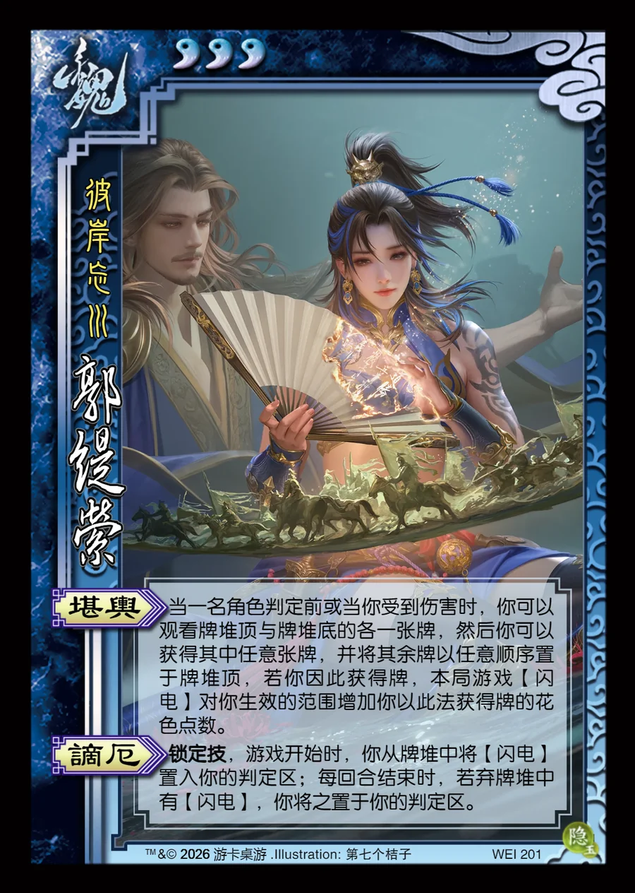

点击卡面查看大图
魏
郭缇萦
♥3彼岸忘川
堪舆
当一名角色判定前或当你受到伤害时，你可以观看牌堆顶与牌堆底的各一张牌，然后你可以获得其中任意张牌，并将其余牌以任意顺序置于牌堆顶，若你因此获得牌，本局游戏【闪电】对你生效的范围增加你以此法获得牌的花色点数。
谪厄锁定技
锁定技，游戏开始时，你从牌堆中将【闪电】置入你的判定区；每回合结束时，若弃牌堆中有【闪电】，你将之置于你的判定区。

点击卡面查看大图
彼岸忘川
当一名角色判定前或当你受到伤害时，你可以观看牌堆顶与牌堆底的各一张牌，然后你可以获得其中任意张牌，并将其余牌以任意顺序置于牌堆顶，若你因此获得牌，本局游戏【闪电】对你生效的范围增加你以此法获得牌的花色点数。
锁定技，游戏开始时，你从牌堆中将【闪电】置入你的判定区；每回合结束时，若弃牌堆中有【闪电】，你将之置于你的判定区。